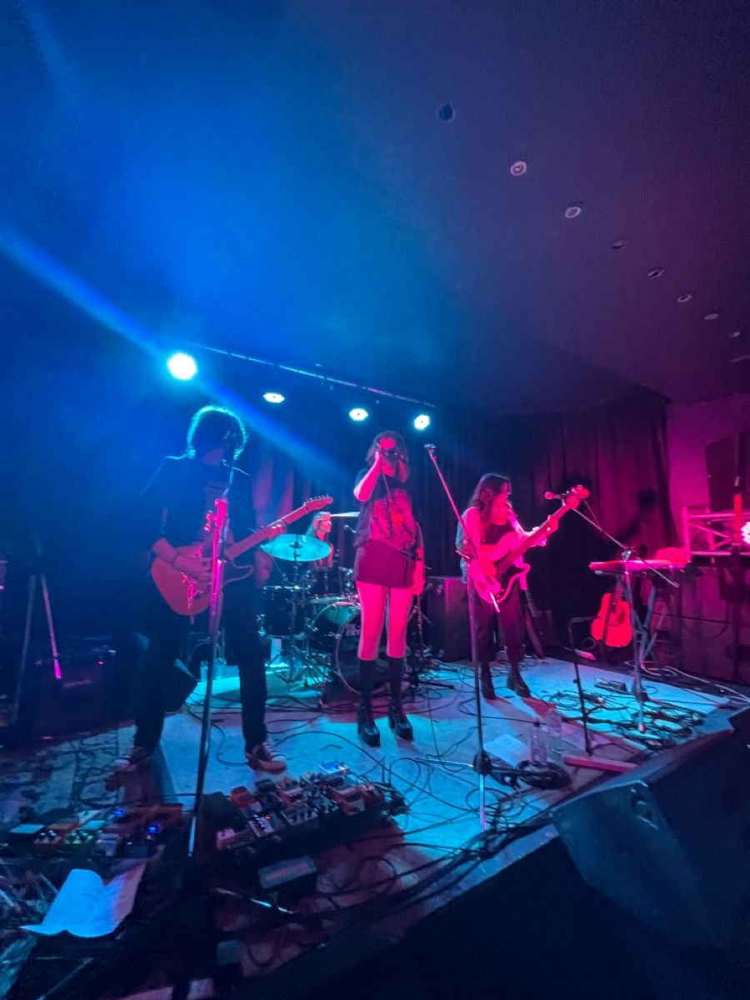
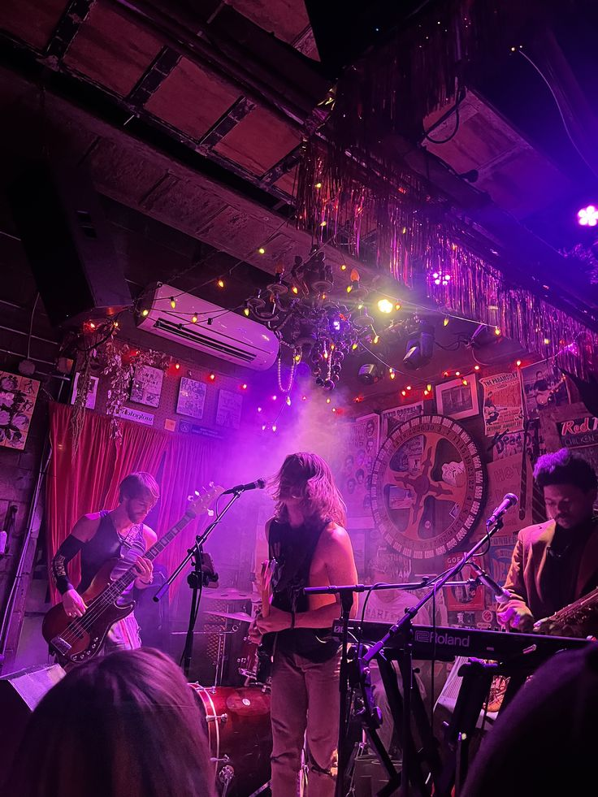

Meet the Band

1st Concert

Band pt 2

POV: You're Watching us Preform
Thermal Wave writes indie rock for the hours right after midnight: warm, synth-glossed, and restless. The band began as four friends squeezed into a humidity-heavy college studio, trading late-night playlists, experimenting with borrowed effects pedals, and discovering that their best ideas always showed up long after everyone else had gone home. What started as casual sessions quickly turned into a shared vision, shaped by sleepless creativity and a love for music that feels both intimate and cinematic. Their sound captures the feeling of wandering through a city when the streets are quiet and the air feels electric. Neon nostalgia, crackling guitar hooks, dreamy synth layers, and lyrics that read like a private thought or a half-remembered dream come together to create tracks that feel personal yet massive. Each song holds the mood of a late-summer memory, sticky and unforgettable, built for listeners who know the magic of being awake when the world is asleep. At the heart of Thermal Wave is friendship and instinct. The band thrives on creative trust, shared influences, and the thrill of turning small, late-night moments into something that glows. Their music is meant to be lived in, replayed, and felt long after the last note fades.